# Packages ----
library(tidyverse) # For data manipulation, plotting, etc.
library(httr) # To import data on github
library(TExPosition) # PCA tools
library(ggrepel) # Plotting tool for ggplot2
library(kableExtra) # HTML table tools
library(RColorBrewer) # Nice plotting colors
library(gridExtra) # Plotting tools
# Custom functions ----
# nice_table() simplifies the printing of HTML tables using kable
nice_table <- function(x){
kable(x) %>%
kable_styling(bootstrap_options = c('striped', 'hover', 'responsive', 'condensed'))
}
# Color palettes ----
rdgy <- brewer.pal(n = 11, name = "RdGy") # display.brewer.pal(11, "RdGy")
# ggplot2 finishings
pca_furnish <- theme_classic() +
theme(axis.title = element_blank(),
axis.ticks = element_blank(),
axis.line = element_blank()
)Exploring 11 Years of Chicago Blackhawk’s Data using Principal Components Analysis
Academic
Hockey Analytics
R
Two grad students get over zealous with PCA and NHL data.
In this post we explore 11 seasons (2007 - 2018) of team summary data from the Chicago Blackhawks of the National Hockey League (NHL). Our question was, “Are there any summary measures, such as goals scored or save percentage, that predict playoff performance or championship wins?”
We explore these data using a variety of techniques, such as:
Z-scores across time
Finding #1a: 2007-2008 was characterized by low time on ice (TOI), Corsi for (CF), and elevated served penalty minutes
Finding #1b: 2012-2013 was characterized by elevated save and shooting percentage
Correlations
Finding #2a: Powerplay units are more selective in their shooting resulting in decreased Corsi estimates; however, this is a speculative hypothesis and needs additional study
Finding #2b: Through time, Blackhawks had more time on ice (likely more overtime play) and decreased their penalties served and taken. Perhaps decreased penalties are related to changes in rules and league-wide game play style
Principal Components Analysis (PCA)
Finding #3a: Component 1 was characterized by the Blackhawks improving as a team over time in penalty minutes and taking more shots, while simultaneously receiving more shots and goals against
Finding #3b: Component 2 was dominated by the 2012-2013 season that was characterized by excellent defense and great offense. This season was the Blackhawk’s Presidents’ Trophy winning season, a Stanley Cup winning season, a shortened lockout season, as well as setting franchise records for win streaks
Setup
Here are the packages that we’ll use for these analyses and functions to style the output/plots.
Data Import
Let’s first prepare the data for analysis. These data were downloaded from Corsica’s team stats tool. We’ve prepared these data for you and are available for import into R like this:
# Link to raw data on Github
link <- "https://raw.githubusercontent.com/mkmiecik14/mkmiecik14.github.io/master/data/nhl-team-data-corsica.csv"
# from https://stackoverflow.com/questions/60714074/download-csv-file-from-github-using-httr-get-request
data <- GET(link)
nhl_data <- read_csv(content(data, "raw"))Rows: 331 Columns: 28
── Column specification ────────────────────────────────────────────────────────
Delimiter: ","
chr (2): Team, Season
dbl (26): GP, TOI, CF, CA, C+/-, CF%, CF/60, CA/60, GF, GA, G+/-, GF%, GF/60...
ℹ Use `spec()` to retrieve the full column specification for this data.
ℹ Specify the column types or set `show_col_types = FALSE` to quiet this message.Data Preparation
To make things simple, without losing information, we’ll use Chicago Blackhawk’s data from the 2007-2008 season up through the 2017-2018 season (11 years of data) and only a subset of the available metrics. These metrics include:
- Games Played (GP)
- Time on Ice (TOI)
- Corsi For (CF) = Shot attempts for at even strength: Shots + Blocks + Misses
- Corsi Against (CA) = Shot attempts against at even strength: Shots + Blocks + Misses
- Goals For (GF)
- Goals Against (GA)
- Penalty minutes served (PENT)
- Penalty minutes drawn (PEND)
- Shooting Percentage (ShootPerc)
- Save Percentage (SavePerc)
# Preparing Hawks data ----
hawks_data <- nhl_data %>%
select(Team:CA, GF, GA, PENT, PEND, ShootPerc = `Sh%`, SavePerc = `Sv%`) %>%
filter(Team == "CHI") %>%
separate(Season, into = c("Start_Year", "Season")) %>%
mutate(Team = NULL,
Start_Year = NULL,
Season = as.numeric(Season)
)
# Prints data
nice_table(hawks_data)| Season | GP | TOI | CF | CA | GF | GA | PENT | PEND | ShootPerc | SavePerc |
|---|---|---|---|---|---|---|---|---|---|---|
| 2008 | 80 | 3423.00 | 2600 | 2629 | 143 | 130 | 368 | 365 | 9.04 | 91.92 |
| 2009 | 82 | 3646.73 | 3286 | 2655 | 146 | 124 | 335 | 368 | 7.45 | 92.42 |
| 2010 | 82 | 3881.33 | 3784 | 2907 | 178 | 147 | 276 | 299 | 8.30 | 90.53 |
| 2011 | 82 | 3955.85 | 3704 | 3314 | 167 | 144 | 239 | 277 | 8.06 | 92.03 |
| 2012 | 82 | 3944.77 | 3698 | 3290 | 166 | 164 | 270 | 287 | 8.15 | 90.99 |
| 2013 | 48 | 2300.80 | 2103 | 1783 | 105 | 68 | 151 | 159 | 8.97 | 92.94 |
| 2014 | 82 | 3979.35 | 3890 | 3129 | 182 | 149 | 244 | 231 | 8.44 | 91.39 |
| 2015 | 82 | 3980.10 | 4003 | 3462 | 150 | 128 | 225 | 248 | 6.87 | 93.54 |
| 2016 | 82 | 3985.37 | 3680 | 3585 | 135 | 141 | 216 | 234 | 6.81 | 92.81 |
| 2017 | 82 | 4053.47 | 3759 | 3692 | 164 | 136 | 206 | 222 | 8.17 | 93.31 |
| 2018 | 82 | 3940.41 | 4199 | 3821 | 156 | 173 | 214 | 261 | 7.08 | 91.82 |
Let’s also prepare a table of notable events of every year in this data set for the Chicago Blackhawks, including their Stanley Cup wins (3) and their playoff success:
# Initializing Chicago Blackhawks notable events table ----
# SCW = Stanley Cup Wins
# PF = Playoff Finish:
# 0 = Did not make playoffs
# 1 = Lost in first round
# 2 = Lost in second round
# 3 = Lost in conference finals
# 4 = Lost in Stanley Cup final
# 5 = Won Stanley Cup
hawks_events <- tibble(Season = hawks_data$Season,
SCW = factor(c(0, 0, 1, 0, 0, 1, 0, 1, 0, 0, 0)),
PF = factor(c(0, 3, 5, 1, 1, 5, 3, 5, 1, 1, 0))
)Z-Scores
Prior to exploring these data and how they’ve changed over time, we have to:
- Adjust all scores by the number of games played due to a shorted 2012-2013 season. We do this by dividing each metric by the number of games played
- Compute z-scores of all measures to facilitate comparisons
# Preprocesses, adjusts, and z-scores hawks data ----
hawks_data_long <- hawks_data %>%
gather(Meas, Val, -Season, -GP) %>%
group_by(Meas) %>%
mutate(Val_Adj = Val/GP, # adjusts based on games played
Val_Zscore = scale(Val_Adj) # computes z-scores
) %>%
ungroup() %>%
mutate(sig = factor(ifelse(abs(Val_Zscore) > 1.96, "p < .05", "p > .05"))) %>% # z score > 1.96
inner_join(., hawks_events, by = "Season") # adds notable hawks eventsPlotting the z-scores of each measure across time allows us to compare across measures using a standardized unit:
# Plots all measures together ----
ggplot(hawks_data_long, aes(factor(Season), Val_Zscore)) +
geom_path(aes(group = 1), color = rdgy[8]) +
geom_point(aes(color = sig, shape = SCW), size = 1.75) +
scale_color_manual(values = c(rdgy[3], rdgy[10]), name = "Z-Score") +
scale_shape_discrete(name = "Stanley Cup Wins") +
scale_y_continuous(breaks = c(-2, 0, 2), minor_breaks = NULL) +
coord_cartesian(ylim = c(-3,3)) +
theme_minimal() +
labs(x = "\n Season",
y = "\n Measurement (Z-Score)",
title = "Chicago Blackhawk's Performance 2007-2018"
) +
facet_wrap(~Meas, nrow = 3) +
theme(axis.text.x = element_text(angle = 45, hjust = 1),
legend.position = "bottom"
)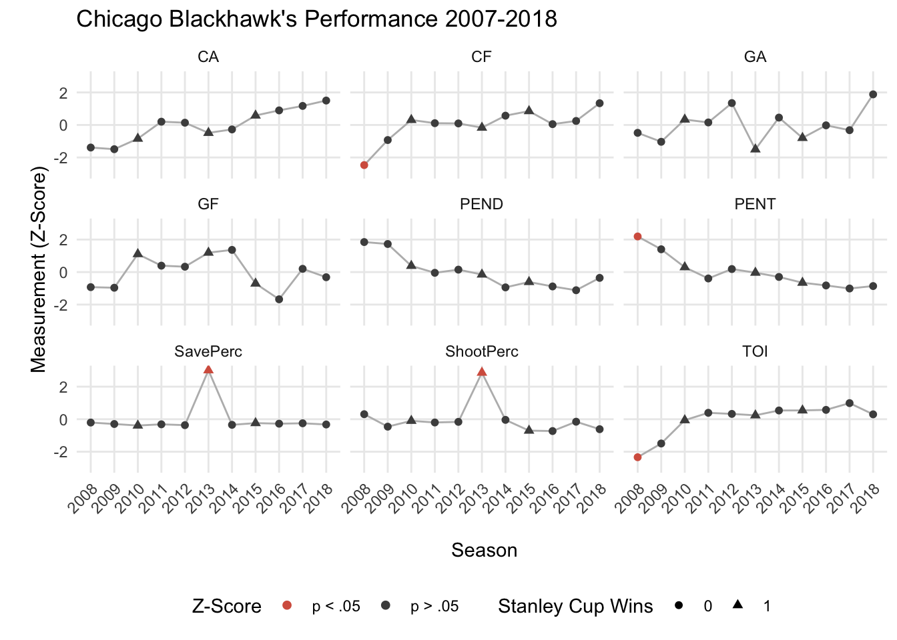
When inspecting these plots in relation to the Chicago Blackhawk’s 3 Stanley Cup wins (triangles), we see very little that stands out. It seems like the 2012-2013 season was a unique one, such that it was a Stanley Cup winning team and their regular season Save Percentage and Shooting Percentage were much greater than their other years. Perhaps these two metrics are important for winning the Presidents’ Trophy (awarded to the NHL team finishing with the highest total points), which the Blackhawk’s received at the end of their 2012-2013 season.
Additionally, the Blackhawk’s 2007-2008 season seemed their worst season with the team recording statistically the least amount of time on ice (TOI), the most penalty minutes served (PENT), and the lowest Corsi For (CF) compared to the following decade of play. The 2007-2008 season was a tumultuous time for the Hawks, including a change in ownership and the later hire of Coach Joel Quennevill (see NYT article). It is likely that the change in ownership, hiring of Coach Q, and the acquisition of Jonathon Towes and Patrick Kane that led to the drastic improvement of team stats in the years following.
Correlations
Now let’s examine how the various team stats/measurements relate to each other by computing their correlations and visualizing them with a heatmap:
# Converts back to wide format
hawks_data_wide <- hawks_data_long %>%
select(Season, Meas, Val_Zscore) %>%
spread(Meas, Val_Zscore)
# Computes correlations
hawks_cors <- cor(hawks_data_wide)
# Correlations to long format for plotting
hawks_cors_long <- hawks_cors %>%
reshape2::melt() %>%
arrange(Var1, Var2)
# Correlation heatmap
ggplot(hawks_cors_long, aes(x = Var1, y = Var2, fill = value)) +
geom_raster() +
theme_minimal() +
theme(axis.text.x = element_text(angle = 45, hjust = 1),
axis.title = element_blank()
) +
scale_fill_distiller(palette = "BrBG",
limits = c(-1, 1),
name = "Correlation"
)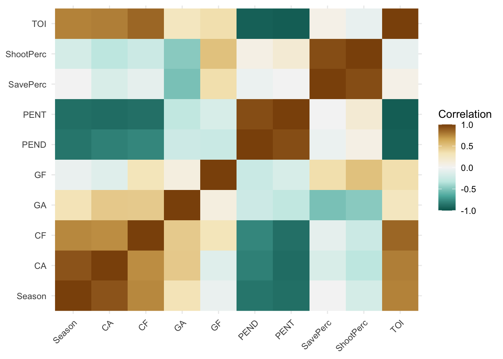
An interesting section that sticks out in the heatmap is the negative relationships between penalties, both served and drawn, and corsi, both for and against. This suggests that as the Hawks improved at drawing penalties, as well worsened at taking penalties, the amount of shots taken at the net decreased. This also came with a decrease in shots let up by the Hawks. My only explanation for this could be that as teams are on the powerplay, they become more selective with their shots, thus decreasing Corsi For and Corsi Against. This sort of aligns with our previous post that determined a decrease in NHL powerplay goals in the last decade. How is decline relates to Corsi is yet to be determined.
Principal Components Analysis (PCA)
We’ve explored these measures individually by plotting their change over time (2007-2018) as well as examining their correlations; however, it’s difficult to extract meaningful relationships between these variables, especially when there are a lot of variables to consider. Also, all relationships between the variables are not considered simultaneously, but rather one at a time (e.g., bivariate correlations). Is there some way to analyze these variables’ relationships simultaneously, while also reducing their complexity?
One method of doing this is principal components analysis (PCA). PCA is often called a data reduction technique because it reduces the data structure into manageable “components” that explain proportions of variability in the data. In order to understand what each component means, we examine how information (e.g., years or measurements) is spread across the components.
Additionally, the PCA that we will demonstrate below places a constraint on the components such that they are orthogonal to each other, meaning that each component is perfectly uncorrelated with every other component (r = 0).
We go over the very basics of PCA below. There is much more to this technique than we present, so we recommend the interested reader the following papers on this statistical technique:
Abdi, H., & Williams, L.J. (2010). Principal component analysis. Wiley Interdisciplinary Reviews: Computational Statistics, 2, 433-459.
Abdi, H. (2007). Singular Value Decomposition (SVD) and Generalized Singular Value Decomposition (GSVD). In N.J. Salkind (Ed.): Encyclopedia of Measurement and Statistics. Thousand Oaks (CA): Sage. pp. 907-912.
We first need to preprocess our data such that each column (i.e., measurement) has a mean of 0 and a standard deviation of 1. In other words, each column should be in z-score format. We’ve already done this above when exploring these data.
A unique feature of this dataset is the shortened 2012-2013 NHL season that we accounted for by scaling each column by the number of games played that season. We already did this above and do not need to repeat this step.
Therefore, the first step here is to convert these data into a matrix format with the season years on the rows as row names:
# Converts to matrix
hawks_data_mat <- hawks_data_wide %>% select(-Season) %>% as.matrix()
rownames(hawks_data_mat) <- hawks_data_wide$Season # Adds rownames
round(hawks_data_mat, 4) %>% nice_table() # Prints HTML table| CA | CF | GA | GF | PEND | PENT | SavePerc | ShootPerc | TOI | |
|---|---|---|---|---|---|---|---|---|---|
| 2008 | -1.3890 | -2.4688 | -0.4854 | -0.9264 | 1.8463 | 2.1908 | -0.2058 | 0.3069 | -2.3384 |
| 2009 | -1.4910 | -0.9281 | -1.0362 | -0.9636 | 1.7270 | 1.4019 | -0.2954 | -0.4589 | -1.4947 |
| 2010 | -0.8442 | 0.3075 | 0.3334 | 1.1052 | 0.3829 | 0.2989 | -0.3895 | -0.1004 | -0.0621 |
| 2011 | 0.2002 | 0.1090 | 0.1547 | 0.3941 | -0.0456 | -0.3929 | -0.3148 | -0.2016 | 0.3930 |
| 2012 | 0.1387 | 0.0941 | 1.3457 | 0.3294 | 0.1492 | 0.1867 | -0.3666 | -0.1637 | 0.3253 |
| 2013 | -0.4876 | -0.1673 | -1.5027 | 1.1941 | -0.1503 | -0.0384 | 3.0104 | 2.8614 | 0.2384 |
| 2014 | -0.2745 | 0.5705 | 0.4525 | 1.3638 | -0.9417 | -0.2994 | -0.3467 | -0.0414 | 0.5365 |
| 2015 | 0.5801 | 0.8509 | -0.7981 | -0.7050 | -0.6105 | -0.6546 | -0.2396 | -0.7035 | 0.5411 |
| 2016 | 0.8957 | 0.0495 | -0.0239 | -1.6747 | -0.8832 | -0.8229 | -0.2759 | -0.7288 | 0.5732 |
| 2017 | 1.1703 | 0.2455 | -0.3217 | 0.2001 | -1.1170 | -1.0098 | -0.2510 | -0.1553 | 0.9891 |
| 2018 | 1.5014 | 1.3372 | 1.8817 | -0.3171 | -0.3573 | -0.8603 | -0.3252 | -0.6149 | 0.2987 |
Next we’ll decompose this matrix using a singular value decomposition (SVD), the mathematical procedure at the heart of PCA. A SVD will decompose (break apart) our original matrix (X) into 3 separate matrices (U, \(\Delta\), V). The original data matrix can be reconstructed via matrix multiplication/linear algebra of these 3 matrices:
\[ X = U \Delta V^T \]
Briefly, U contains information about the rows (e.g., years), V contains information about the columns (e.g., measures), and \(\Delta\) is a diagonal matrix of “weights” called singular values that are the square root of the eigenvalues (\(\lambda\)).
Computing the SVD of our data matrix in R requires just one line of code:
hawks_data_svd <- svd(hawks_data_mat) # singular value decomposition (SVD)Eigen Values
Our original data matrix was 11 rows (years) x 9 columns (measures); therefore, the SVD of that matrix will produce 9 singular values/components – with the smaller side dictating the number of components produced.
Which components are important? Which ones explain the most variance? Are some of the components just noise?
A good first pass at answering these questions is to examine the scree plot – plotting the components as a function of variability explained.
To do this, let’s first square the singular values (\(\Delta\)) and sum them together. This is called inertia.
\[ I = \Sigma\lambda = \Sigma\Delta^2 \]
inertia <- sum(hawks_data_svd$d^2) # Calculates inertiaNext, we’ll use the inertia to calculate the percentage of variability explained for each component and plot the scree:
# Calculates values for the scree plot
scree <- tibble(eigs = hawks_data_svd$d^2,
perc_explained = (eigs/inertia)*100,
comps = 1:length(eigs)
)
# Scree plot
ggplot(scree, aes(factor(comps), eigs)) +
geom_point() +
geom_path(aes(group = 1)) +
scale_y_continuous(sec.axis = sec_axis(~./inertia * 100,
name = "Explained Variance (%) \n"
)
) +
labs(x = "\n Components", y = "Eigenvalues \n") +
theme_minimal()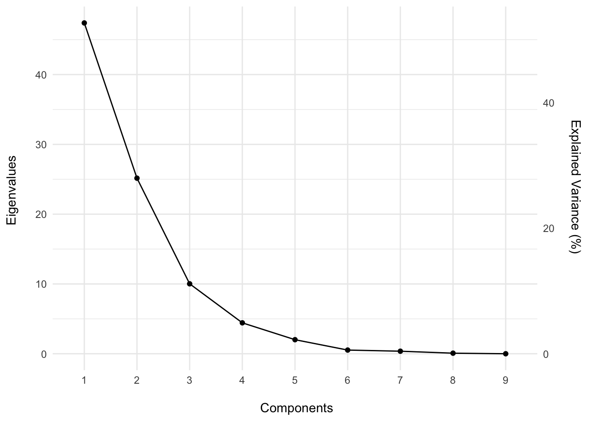
As we can see from the scree plot, the first 3 components comprise 91.75% of the total variance, suggesting that these first three components are important to understanding the structure of the data set. The remaining components explain only 8.25% of the variability and may perhaps be noise.
Is there any way to statistically show that these components are important? One method is permutation testing. If you are unfamiliar with permutation testing, we recommend checking out our Shiny dashboard here.
Briefly, to perform permutation testing we will scramble the information down the columns, thus breaking the relationship between the years and their measures. Then, we will re-compute the SVD for the new scrambled data matrix. We will repeat these steps 2,000 times, forming a null distribution of eigenvalues from which to compare our originally observed eigenvalues.
perm_iters <- 2000 # number of permutation iterations
set.seed(2019) # sets seed for reproducible results
# Initializes matrix to hold permutation results
perm_res <- matrix(data = 0, nrow = perm_iters, ncol = length(hawks_data_svd$d))
for(i in 1:perm_iters){
this_matrix <- apply(hawks_data_mat, 2, sample) # scrambles down columns
perm_res[i,] <- svd(this_matrix)$d^2 # saves eigenvalues to perm_res
}Now let’s visualize these results against the observed values. We’ll determine that a component is significant if its original observed eigenvalue is greater than 95% of the values derived from the null distribution (i.e., permutation testing).
# Converts to long format for plotting
perm_res_long <- as_tibble(perm_res) %>%
gather(comps, eigen) %>%
mutate(comps = as.numeric(gsub("V", "", comps)))
# Plots permutation results
ggplot(perm_res_long, aes(eigen)) +
geom_histogram(binwidth = 1) +
geom_vline(data = scree,
aes(xintercept = eigs),
color = rdgy[3],
linetype = 2
) +
coord_cartesian(ylim = c(0, 800)) +
scale_y_continuous(minor_breaks = NULL) +
scale_x_continuous(minor_breaks = NULL) +
labs(x = "\n Eigenvalue",
y = "Frequency \n",
caption = "\n Note: Originally observed eigenvalues denoted by red dashed line."
) +
facet_wrap(~comps) +
theme_minimal()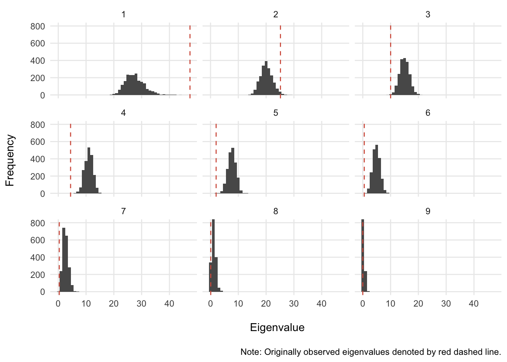
It looks like the only components that have a shot at being greater than 95% of the null distribution are components 1 and 2. Let’s see if this is the case:
scree_sig <- perm_res_long %>%
group_by(comps) %>%
summarise(ul = quantile(eigen, .975)) %>% # computes upper limit of 95%
inner_join(., scree, by = "comps") %>%
mutate(sig = ifelse(eigs>ul, "p < .05", "p > .05"))
ggplot(scree_sig, aes(factor(comps), eigs)) +
geom_path(aes(group = 1), color = rdgy[8], linetype = 2) +
geom_point(aes(color = sig), size = 2) +
scale_y_continuous(sec.axis = sec_axis(~./inertia * 100,
name = "Explained Variance (%) \n"
)
) +
scale_color_manual(values = c(rdgy[3], rdgy[9]), name = NULL) +
labs(x = "\n Components", y = "Eigenvalues \n") +
theme_minimal() +
theme(legend.position = "bottom")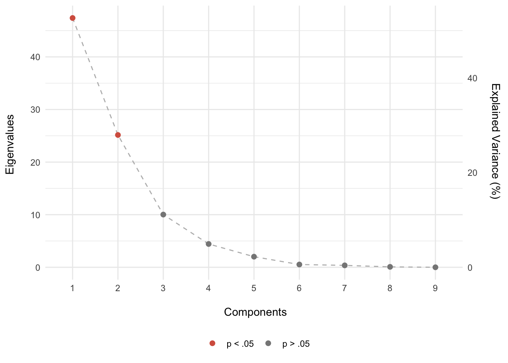
What we suspected was correct: given a null distribution/hypothesis, only components 1 and 2 were greater than 95% permuted eigenvalues. In other words, there is less than a 5% chance that the pattern of the results seen on components 1 and 2 are this extreme given that the null hypothesis is true (i.e., no relationship). Therefore, we’ll pay special attention to components 1 and 2.
Now that we know what components may be more important than others, let’s take a look at what we can learn from examining factor scores for the rows (years) and the columns (measures).
Row-wise Factor Scores
We can explore how the years are seen through the components by first scaling (multiplying) the U matrix by the singular values. \[F_{years} = U\Delta\] The %*% operator performs matrix algebra:
years <- hawks_data_svd$u %*% diag(hawks_data_svd$d) # scaling years data
rownames(years) <- rownames(hawks_data_mat) # adds rownamesNow let’s visualize the factor scores for components 1 and 2:
# Builds dataframe of row-wise factor scores with notable events
years_fs <- as_tibble(years) %>%
mutate(Season = hawks_data_wide$Season) %>%
left_join(., hawks_events, by = "Season") # imports notable events
# Plots factor scores colored by Stanley Cup wins
# tip: surrounding an action in R with () will automatically plot to screen
(years_fs_scw <- ggplot(years_fs, aes(V1, V2, color = SCW)) +
geom_vline(xintercept = 0, alpha = 1/3) +
geom_hline(yintercept = 0, alpha = 1/3) +
geom_point() +
coord_cartesian(xlim = c(-7,7), ylim = c(-7,7)) +
scale_color_manual(values = c(rdgy[9], rdgy[2]), name = "Stanley Cup Wins") +
geom_text_repel(aes(label = Season), segment.alpha = 0, show.legend = FALSE) +
pca_furnish +
theme(legend.position = "bottom")
)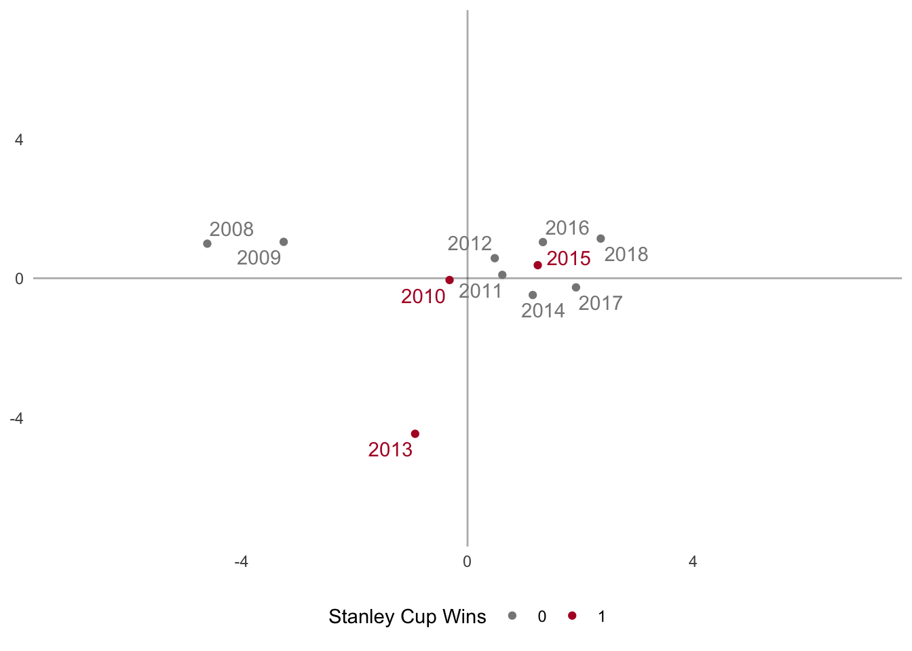
The above graph plots the years as they are seen through the first 2 dimensions of the PCA and colors the points based on Stanley Cup wins. The years cluster together into three distinct groups
- The 2007-2008 and 2008-2009 seasons
- The 2013 season
- The 2010-2018 seasons
while the 2010 season is near the origin – meaning it doesn’t contribute much to either group. Interestingly, there seems to be no clear pattern in regards to regular season play and Stanley Cup wins because these winning seasons are not clustered together.
A pattern that does seem to emerge is the improvement of the team over time across principal component 1 (x-axis). Principal component 2 is dominated by the 2012-2013 season, probably due to the uniqueness of this season: shortened season due to lockout, Presidents’ trophy winners, and Stanley Cup champions.
Let’s now color the points based on playoff performance:
# Plots factor scores colored by playoff performance
# tip: surrounding an action in R with () will automatically plot to screen
(years_fs_pf <- ggplot(years_fs, aes(V1, V2, color = PF)) +
geom_vline(xintercept = 0, alpha = 1/3) +
geom_hline(yintercept = 0, alpha = 1/3) +
geom_point() +
coord_cartesian(xlim = c(-7,7), ylim = c(-7,7)) +
scale_color_brewer(palette = "Dark2", direction = -1) +
geom_text_repel(aes(label = Season), segment.alpha = 0, show.legend = FALSE) +
pca_furnish +
theme(legend.position = "bottom")
)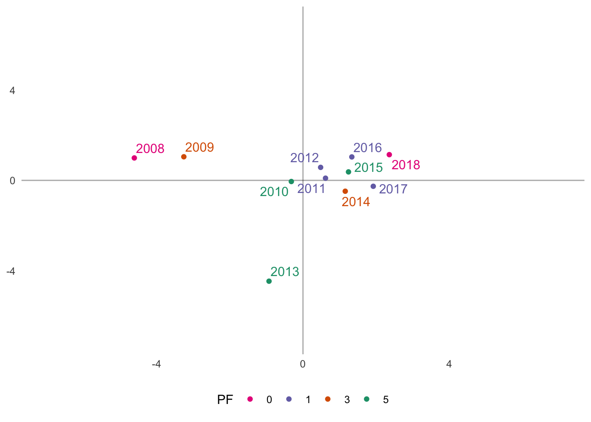
One pattern of results that emerges, somewhat unexpectedly, is that the 2007-2008 and 2017-2018 seasons are contrasted on principal component 1 (x-axis). In both seasons, the Hawks missed the playoffs (did not qualify); however, the 2018 season is more similar to the seasons in which the Hawks made the playoffs. These results also highlight the 2015 Stanley Cup winning season, which is surrounded by seasons with early first round playoff exits. This may be indicative of an average regular season in 2015 (in respect to the Hawks), but an exceptional post season performance.
Column-wise Factor Scores
Through the PCA, we are also able to examine the factor scores from the team metrics/stats (i.e., columns). Let’s scale the V matrix by the singular values to obtain the factor scores. \[F_{metric} = V\Delta\] Again, the %*% operator performs matrix algebra:
metric <- hawks_data_svd$v %*% diag(hawks_data_svd$d) # scaling years data
rownames(metric) <- colnames(hawks_data_mat) # adds rownames
# Converts to long format for plotting
metric_fs <- as_tibble(metric) %>% mutate(Metric = colnames(hawks_data_mat))Now let’s visualize the factor scores for components 1 and 2:
# Plots the column-wise factor scores
(metric_plot <- ggplot(metric_fs, aes(V1, V2)) +
geom_vline(xintercept = 0, alpha = 1/3) +
geom_hline(yintercept = 0, alpha = 1/3) +
geom_point() +
coord_cartesian(xlim = c(-7,7), ylim = c(-7,7)) +
geom_text_repel(aes(label = Metric), segment.alpha = 0) +
pca_furnish
)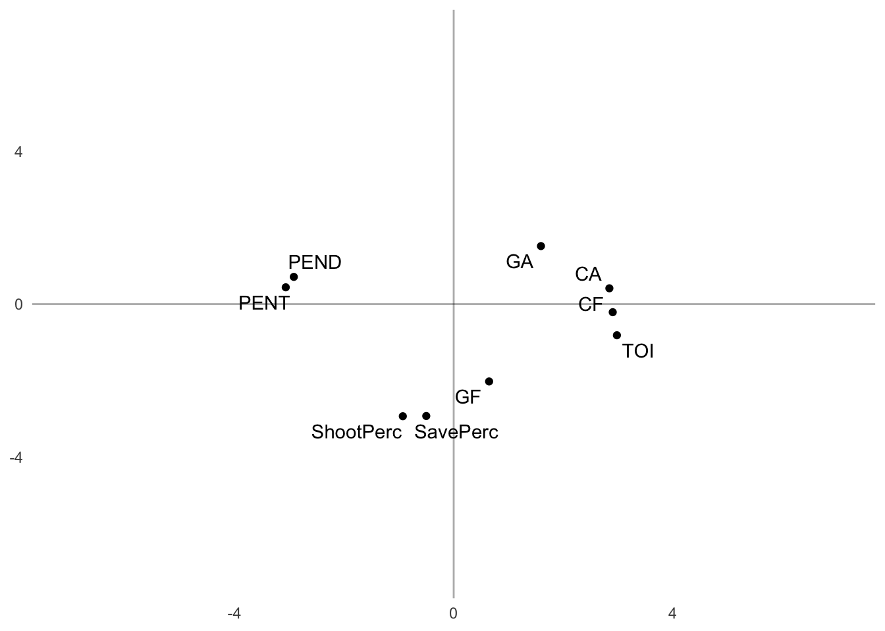
Similar to the year-wise factor scores, we obtained 3 clusters of team-wise metrics across components 1 and 2. Component 1 contrasts penalty minutes (both drawn and taken) with Corsi (both For and Against), time on ice (TOI) and goals against (GA).
This contrast suggests a negative relationship with these metrics (e.g., as penalty minutes served increased, Corsi against decreased). This is sort of paradoxical, but it is similar to what we saw above with the correlation plot.
Additionally, the second component is dominated by Shooting Percentage, Save Percentage, and Goals For – and contrasted by GA. It makes sense that increases in Shooting Percentage would be related to increases in Goals For, which would also be related to decreases in Goals Against.
Factor Score Comparisons
To provide more context, let’s compare the year-wise and metric-wise factor scores side-by-side:
grid_furnish <- theme(legend.position = "none",
axis.text = element_blank()
)
# Plots side-by-side
grid.arrange(years_fs_pf + grid_furnish,
metric_plot + grid_furnish,
nrow = 1
)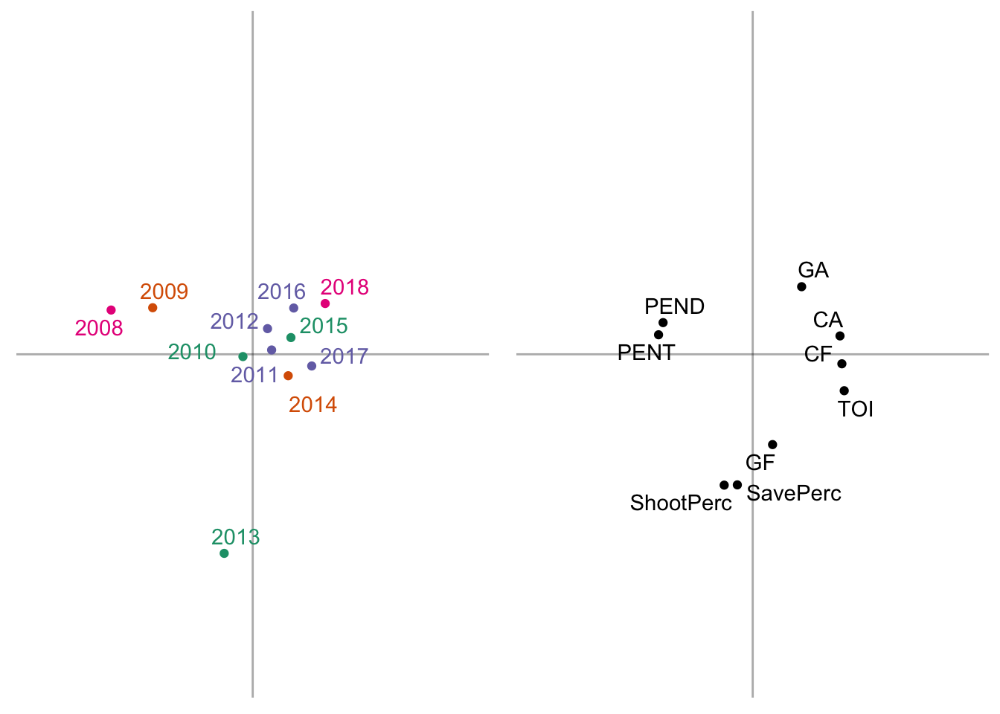
From here we gain a rich perspective of how each year-wise clustering is described through patterns in team stats:
- Cluster 1: the 2007-2008 and 2008-2009 seasons are well described by elevated penalty minutes (both drawn and taken)
- Cluster 2: the 2011-2018 seasons are well described by elevated Corsi (both For and Against), Goals Against (GA), and time on ice (TOI)
- Cluster 3: the 2012-2013 season was characterized by a high powered offense (elevated Shooting % and Goals For) and excellent defense (high Save % and low Goals Against)
Contributions
We can also take a look at how much each season (row) or metric (column) contributes to each component. To calculate the contribution of each component, we square each factor score and divide it by the sum of squared factor, which is also the eigenvalue.
\[contribution = \frac{f^2}{\Sigma f^2} = \frac{f^2}{\lambda}\]
Here is a function that will compute the contributions:
# Contribution calculator function ----
contribution <- function(vector, sign = TRUE) {
vector_sq <- vector^2
vector_sq_sum <- sum(vector_sq)
if (sign == TRUE) {
vector <- vector_sq/vector_sq_sum*sign(vector)
} else {
vector <- vector_sq/vector_sq_sum
}
}Row-wise Contributions
Now let’s apply the above function to calculate the contributions of the years (rows):
# calculates the contribution of each row (e.g., season) ----
contributions_years <- apply(years, 2, contribution)
# add column names
colnames(contributions_years) <- paste0("Component_",1:ncol(contributions_years))
# converts contributions to long format ----
contributions_years_long <- contributions_years %>%
as_tibble() %>%
mutate(Season = rownames(years)) %>% # add Seasons
reshape2::melt(value.name = "Contributions") %>% # ensure values are called contributions
group_by(variable) %>%
mutate(Contributes = ifelse(abs(Contributions) > abs(mean(Contributions)),
"Yes",
"No")
) %>%
ungroup()Now let’s plot these contributions. Any years that have contributions greater than the mean are said to contribute to the variability on that component:
# calculate the mean of each component for graphing ----
contributions_years_means <- contributions_years_long %>%
group_by(variable) %>%
summarise(mean = mean(Contributions)) %>%
ungroup()
# looking only at first two components ----
year_contrib <- contributions_years_long %>%
filter(variable %in% c("Component_1", "Component_2"))
year_contrib_means <- contributions_years_means %>%
filter(variable %in% c("Component_1", "Component_2"))
# plot the contribution bars with the +/- mean
# filtering only the first two components
ggplot(year_contrib, aes(x = Season, y = Contributions, fill = Contributes)) +
geom_bar(stat = "identity", color = "black") +
coord_flip(ylim = c(-.9, .9)) +
geom_hline(data = year_contrib_means,
aes(yintercept = mean),
linetype = "dashed",
alpha = 0.5
) +
geom_hline(data = year_contrib_means,
aes(yintercept = -mean),
linetype = "dashed",
alpha = 0.5
) +
scale_fill_manual(values = c(rdgy[8], rdgy[3])) +
labs(x = "Season \n",
y = "\n Contributions",
caption = "\nNote: Dashed lines represent the mean contribution."
) +
theme_minimal() +
theme(legend.position = "bottom"
) +
facet_wrap(~variable,
labeller = as_labeller(c(`Component_1` = "Component 1\n",
`Component_2` = "Component 2\n"
)
)
)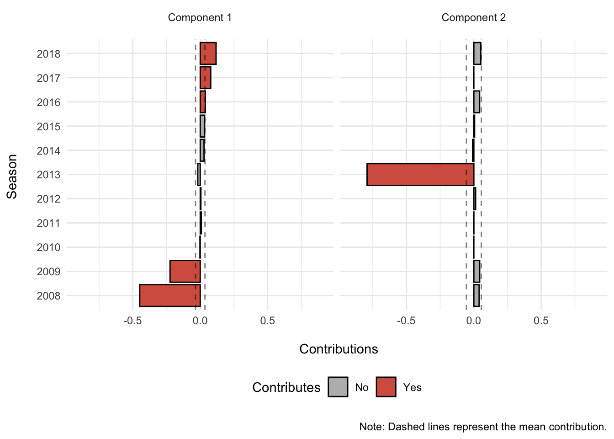
Season 2008 and 2009 contribute more than the mean season on the negative side of component 1, while seasons 2016 to 2018 contribute more than the mean season on the positive side of component 1. In other words, the 2008 and 2009 seasons are in stark contrast to the 2016-2018 seasons on component 1.
For component 2, only season 2013 contributes more than the mean season and on the negative side of component 2. Thus, component 2 likely reflects the 2013 season.
Column-wise Contributions
Now let’s repeat this procedure for the metrics (columns):
# calculates the contribution of each row (e.g., metric)
contributions_metric <- apply(metric, 2, contribution)
# add column names
colnames(contributions_metric) <- paste0("Component_",1:ncol(metric))
# converts contributions to long format
contributions_metric_long <- as_tibble(contributions_metric) %>%
mutate(Metric = rownames(contributions_metric)) %>%
reshape2::melt(value.name = "Contributions") %>%
group_by(variable) %>%
mutate(Contributes = ifelse(abs(Contributions) > abs(mean(Contributions)),
"Yes",
"No")
) %>%
ungroup()And here are the contribution plots for the metrics on components 1 and 2:
# calculate the mean of each component for graphing
contributions_metric_means <- contributions_metric_long %>%
group_by(variable) %>%
summarise(mean = mean(Contributions))
# looking only at first two components ----
metric_contrib <- contributions_metric_long %>%
filter(variable %in% c("Component_1", "Component_2"))
metric_contrib_means <- contributions_metric_means %>%
filter(variable %in% c("Component_1", "Component_2"))
# plot the contributions bars with +/-mean
# filtering only the first two components
ggplot(metric_contrib, aes(x = reorder(Metric, Contributions), y = Contributions, fill = Contributes)) +
geom_bar(stat = "identity", color = "black") +
coord_flip(ylim = c(-.9, .9)) +
geom_hline(data = metric_contrib_means,
aes(yintercept = mean),
linetype = "dashed",
alpha = 0.5
) +
geom_hline(data = metric_contrib_means,
aes(yintercept = -mean),
linetype = "dashed",
alpha = 0.5
) +
scale_fill_manual(values = c(rdgy[8], rdgy[3])) +
labs(x = "Metric \n",
y = "\n Contributions",
caption = "\nNote: Dashed lines represent the mean contribution."
) +
theme_minimal() +
theme(legend.position = "bottom"
) +
facet_wrap(~variable,
labeller = as_labeller(c(`Component_1` = "Component 1\n",
`Component_2` = "Component 2\n"
)
)
)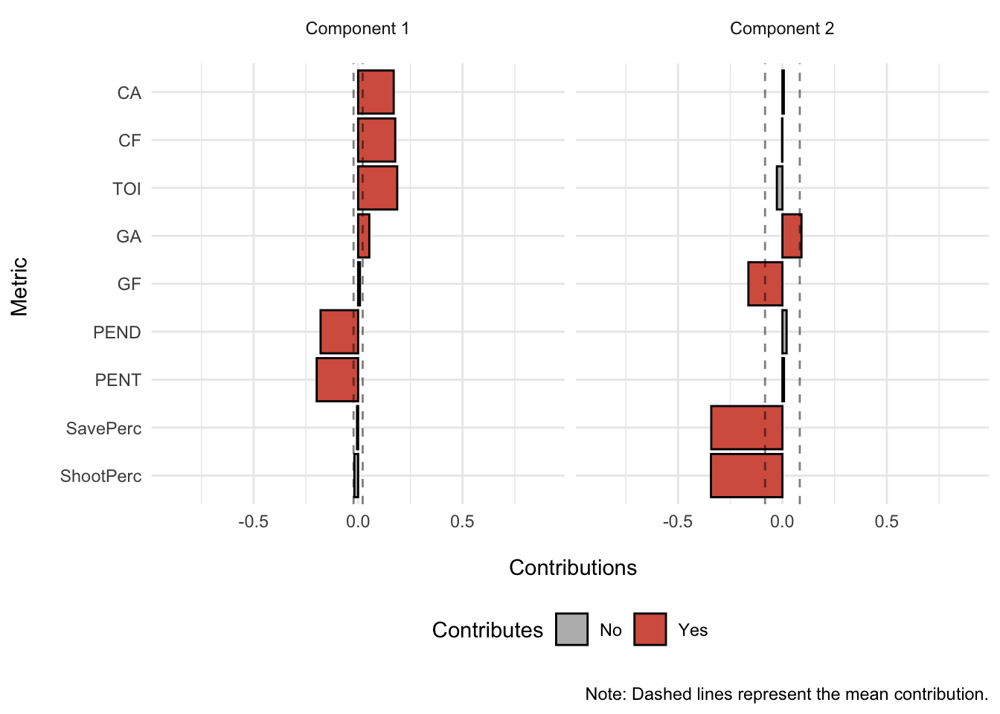
Penalty minutes drawn (PEND) and penalty minutes served (PENT) contribute more than the mean metric to the negative side of component 1; while Corsi Against (CA), Corsi For (CF), Goals Against (GA), and Time on Ice (TOI) contribute more than the mean metric to the positive side of component 1.
Goals For (GF), Save Percentage (SavePerc), and Shooting Percentage (ShootPerc) contribute more than the mean metric to the negative side of component 2; while Goals Against (GA) contributes more than the mean metric to the positive side of component 2.
Goals Against (GA) appears to contribute to both the positive side of component 1 and 2.
Taking into both the row-wise and column-wise contributions confirm the factor score plots:
Component 1
- Season 2008 and 2009 are associated with penalty minutes drawn and served (PEND and PENT, respectively) and both contribute negatively to component 1.
- On the other hand, seasons 2016 to 2018 are associated with Corsi For (CF), Corsi Against (CA), Goals Against (GA), and Time on Ice (TOI) and contribute to the positively to component 1.
Component 2
- Season 2013 is associated with Goals For (GF), Save Percentage (SavePerc), and Shooting Percentage (ShootPerc) and contribute negatively to component 2.
- On the other hand, Goals Against (GA) contributes positively to component 2.
Summary
In this investigation we used z-scores, correlations, and Principal Components Analysis (PCA) to examine 11 years of data from the Chicago Blackhawks spanning from the 2007-2008 season to the 2017-2018 season. We determined that the first two components described these data well across time though various readily available and simple metrics, such as goals scored, penalty minutes served, shooting percentage, etc.
The main take away messages include:
The 2007-2008 & 2008-2009 seasons are distinctly opposite when compared to the 2015-2018 seasons. They differ in this respect due to opposing patterns in penalty minutes (served and drawn) and Corsi (both For and Against).
The Hawks had an incredible 2012-2013 season that resulted in the Presidents’ trophy and a Stanley Cup win. This was reflected in the second principal component and was associated with both heightened offensive (e.g., Shooting Percentage, Goals For) and defensive (e.g., Save Percentage) statistics.
Do these components suggest certain patterns of regular season statistics that predict Stanley Cup performance? No. There seems no distinct pattern that groups the Stanley Cup winning seasons on a separate component; however, the 2012-2013 season did emerge as a unique season in comparison to the other seasons.
Future directions include logistic regression approaches that utilize factor scores from this PCA to understand relationships between regular season stats and playoff performance.
Exercise
Even though component 3 is not significant according to the permutation testing, does it still tell us something meaningful? Try replicating these analyses above and let us know what you think!